정보통신산업기사 (2021-10-02 기출문제)
1과목: 디지털전자회로
1. 다음 중 맥동 전압(Ripple Voltage)에 대한 설명으로 옳은 것은?
- 맥동이 클수록 필터 동작이 뛰어나다.
- 맥동률은 직류 출력 전압에 대한 맥동 전압의 비율이다.
- 전파 정류기는 반파 정류기보다 맥동이 커서 많이 사용된다.
- 맥동률이 높을수록 더 좋은 필터이며 커패시터 값이 커질수록 맥동률은 커진다.
(정답률: 61%)

2. 반파정류기의 직류출력전압이 20[V]일 때 맥동전압의 rms 값은?
- 24.2[V]
- 20.0[V]
- 9.6[V]
- 7.7[V]
(정답률: 62%)
3. 다음 중 정전압 안정화 회로에서 안정화 전원용으로 사용되는 소자는?
- 콘덴서
- 코일
- 제너다이오드
- FET
(정답률: 67%)
4. PNP와 NPN 트랜지스터를 조합하여 이루어진 Push-Pull 증폭회로를 무엇이라 하는가?
- 컴플리멘터리 SEPP 회로
- 위상반전회로
- OTL
- OCL
(정답률: 59%)
5. 다음 그림은 베이스 바이어스 회로이다. 동작점에서 VCE 전압은? (단, 베이스에미터 전압 VBE = 0.7[V] 이다.)
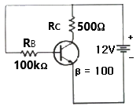
- 2.25[V]
- 6.35[V]
- 11.3[V]
- 12.0[V]
(정답률: 59%)
6. 다음 회로는 FET를 이용한 Coltage-series 궤환 증폭회로이다. 궤환이 없을 때 전압이득 AV는? (단, FET의 드레인 저항은 rd, 전달 컨덕턴스 gm, 증폭률 μ = gmrd)
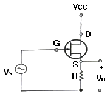
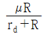
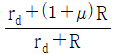
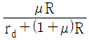
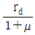
(정답률: 62%)
7. 차동증폭기에서 두 입력 전압이 각각 V1 = 50[μV], V2 = -50[μV] 일 때 출력전압은 얼마인가? (단, Ad는 차신호 이득이며, CMRR = 100 이다.)
- ∞
- 50Ad[μV]
- 100Ad[μV]
- 200Ad[μV]
(정답률: 74%)
8. 다음 중 연산 증폭회로의 응용인 비교기에 대한 설명으로 옳지 않은 것은?
- 두 개의 입력 전압과 하나의 출력 전압을 갖는다.
- 비반전전압이 반전전압보다 크면 높은 전압을 출력한다.
- 비반전전압이 반전전압보다 작으면 낮은 전압을 출력한다.
- 가성접지 때문에 커패시터 전류는 귀환저항을 통해 흐르고 전압을 발생시킨다.
(정답률: 64%)
9. 다음 중 푸시풀 전력증폭기에서 출력신호 파형의 찌그러짐이 작아지는 주된 이유는 무엇인가?
- 기수차 고조파 성분이 상쇄되기 때문이다.
- 우수차 고조파 성분이 상쇄되기 때문이다.
- 기수차 및 우수차 고조파 성분이 모두 상쇄되기 때문이다.
- 직류성분이 없어지기 때문이다.
(정답률: 60%)
10. 완충증폭기로 A급 증폭기를 많이 사용하는 이유는 무엇인가?
- 능률이 좋다.
- 조정이 쉽다.
- 기생진동이 없다.
- 안정된 증폭을 한다.
(정답률: 75%)
11. 15[kHz]까지 전송할 수 있는 PCM시스템에서 요구되는 최소 표본화 주파수는?
- 10[kHz]
- 20[kHz]
- 30[kHz]
- 40[kHz]
(정답률: 73%)
12. 다음 중 DSB-LC(DSB-TC) 변조 후에 발생되는 (피)변조 신호를 구성하는 성분이 아닌 것은?
- 반송파
- USB
- LSB
- FSB
(정답률: 52%)
13. 다음 중 아날로그 진폭 변조 방식의 종류가 아닌 것은?
- DSB-LC(DSB-TC)
- DSB-SC
- FM
- SSB
(정답률: 73%)
14. 진폭변조에서 신호파 xs(t) = 4cos2πfst, 반송파 xc(t) = 5cos2πfct 로 주어질 때 피변조파 x(t)를 나타낸 것은?
- x(t) = 4(1 + 0.8sin2πfst)cos2πfct
- x(t) = 4(1 + 0.8cos2πfst)cos2πfct
- x(t) = 5(1 + 0.8sin2πfst)cos2πfct
- x(t) = 5(1 + 0.8cos2πfst)cos2πfct
(정답률: 65%)
15. 멀티바이브레이터에서 비안정, 단안정, 쌍안정의 구별은 무엇으로 결정되는가?
- 결합 회로의 구성에 따라
- 전원 전압의 크기에 따라
- 바이어스 전압의 크기에 따라
- 인덕터의 수에 따라
(정답률: 62%)
16. 다음 중 멀티바이브레이터에 대한 설명으로 잘못된 것은?
- 정궤환이 이루어지는 회로이다.
- 출력 파형은 고차의 고조파를 포함한다.
- 시정수는 입력 파형의 주기를 결정한다.
- 스위치 회로의 구형파 발생, 계수회로로 사용된다.
(정답률: 54%)
17. 다음 그림과 같은 Exclusive-OR 게이트를 이용하여 출력값이 'Y=B'인 Buffer로 활용하기 위한 입력결선 방법으로 가장 옳은 것은?
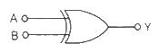
- 입력 A는 Open 시킨다.
- 입력 A를 +5[V]로 고정한다.
- 입력 A를 0[V]로 고정한다.
- 입력 A를 출력 Y와 연결한다.
(정답률: 70%)
18. 다음 회로의 기능과 같은 논리 게이트는 무엇인가?
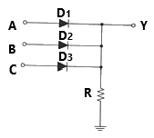
- AND
- OR
- EX-OR
- NAND
(정답률: 56%)
19. 두 입력을 비교하여 A＞B 이면 출력이 1 이고, A≤B 이면 출력이 0 이 되는 논리회로를 설계하고자 한다. 이 조건을 만족하는 논리식은?
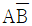
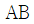
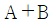
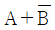
(정답률: 66%)
20. 2진 비교기의 입력이 X = 1, Y = 0 일 때 비교기 출력 X ＞ Y 와 X ＜ Y의 값을 바르게 나타낸 것은?
- 0, 0
- 0, 1
- 1, 1
- 1, 0
(정답률: 69%)
2과목: 정보통신기기
21. 다음 중 데이터 전송계에서 데이터의 입·출력 기능을 담당하는 장치는 어느 것인가?
- DTE
- DCE
- CCU
- TSS
(정답률: 72%)
22. 정보 단말기 중 회선 접속부의 기능이 아닌 것은?
- 병렬 Data를 직렬로 변환 기능
- 2진 비틀열로 변환 기능
- 직렬 Data를 병렬로 변환 기능
- 전송제어문자나 부호의 식별 기능
(정답률: 78%)
23. 다음 중 정보통신시스템의 구성 분류에서 데이터처리계(정보처리시스템)에 해당되지 않는 것은?
- 중앙처리장치
- 변복조장치
- 기억장치
- 입출력장치
(정답률: 62%)
24. 다음 중 주파수분할다중화(FDM)기의 설명이 아닌 것은?
- 동기식 데이터 다중화에 사용된다.
- 1,200[bps] 이하에서 사용된다.
- 채널간 완충지역으로 가드밴드(Guard Band)를 주어야 한다.
- 별도의 모뎀이 필요 없다.
(정답률: 58%)
25. 입력회선의 수가 출력회선의 수와 같거나 많으며, 동적 할당을 통해서 실제 전송할 데이터가 있는 단말 장치에게만 시간폭을 할당하는 장비는?
- 집중화기
- 다중화기
- 모뎀 공유 장치
- 라우터
(정답률: 73%)
26. 두 개의 랜을 연결하여 확장된 랜을 구성하는데 사용되며 ISO 7 layer의 2계층에서 이용되는 장비는?
- 게이트웨이
- 리피터
- 라우터
- 브리지
(정답률: 73%)
27. 외부 망인 상대편 라우터의 시리얼 포트의 IP 주소와 서브넷 마스크가 보기와 같이 주어지면, 우리측 라우터의 시리얼 포트의 IP 주소와 서브넷 마스크로 맞는 것은?
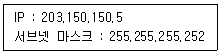
- IP : 203.150.150.5, 서브넷 마스크 : 255.255.255.0
- IP : 203.150.150.5, 서브넷 마스크 : 255.255.255.252
- IP : 203.150.150.6, 서브넷 마스크 : 255.255.255.0
- IP : 203.150.150.6, 서브넷 마스크 : 255.255.255.252
(정답률: 72%)
28. 다음 중 WAN(Wide Area Network)의 전송 방식이 아닌 것은?
- Leased Line
- Circuit Switched
- Packet Switched
- Layer(L2) Switched
(정답률: 82%)
29. 화상정보를 특정 목적으로 특정의 수신자에게 전달하여 보안, 감시 등 분야에 응용하는 화상정보 시스템은?
- CCTV
- DMB
- HDTV
- DTV
(정답률: 86%)
30. 다음 중 고선명 TV(HDTV)에 대한 설명으로 옳지 않은 것은?
- 프레임당 주사선수 1,125개를 사용한다.
- 화면의 종횡비는 9:16를 사용한다.
- 음성신호 변조방식은 PCM(Pulse Code Modulation)을 사용한다.
- 주사방식은 순차주사방식은 사용한다.
(정답률: 62%)
31. 다음 중 디지털TV와 IPTV 방송의 영상압축 전송기술 방식이 아닌 것은?
- MPEG4
- H.264
- MPEG2
- AC3
(정답률: 85%)
32. VSAT위성통신에서 한정된 주파수자원의 이용 효율을 높이기 위하여 상향링크와 하향링크에 사용하는 접속방식은? (단, 중심국에서 단말국은 하향링크, 단말국에서 중심국간의 상향링크라고 한다.)
- 상향링크 : 다원접속방식, 하향링크 : 다원접속방식
- 상향링크 : 다원접속방식, 하향링크 : 다중화방식
- 상향링크 : 다중화방식, 하향링크 : 다중화방식
- 상향링크 : 다중화방식, 하향링크 : 다원접속방식
(정답률: 77%)
33. 다음 중 멀티빔(Mutil beam) 위성통신 방식에 대한 설명으로 옳지 않은 것은?
- 전송용량은 증대시킬 수 있다.
- 위성 안테나가 대형이면 지구국 안테나를 소형으로 할 수 있다.
- 상호 거리를 축소시킬 수 있다.
- 주파수를 효율적으로 이용할 수 있다.
(정답률: 69%)
34. 다음 중 위성통신 방식에서 서비스의 형태에 따른 분류에 속하는 것은?
- 통신위성
- 수동위성
- 정지위성
- 저궤도위성
(정답률: 71%)
35. 이동통신망에서 레일리 페이딩(Reyleigh Fading)은 어떤 요인에 의하여 발생하는가?
- 고층건물, 철탑 등과 같은 인공 구조물
- 산, 언덕 등 자연 지형의 굴곡
- 가시 경로의 직접파와 주변 상황에 의한 반사파의 동시 존재
- 도로 주변의 가로수
(정답률: 78%)
36. 다음 중 이동통신 시스템에서 기지국의 기능으로 거리가 먼 것은?
- 발·착신 신호 송출 기능
- 가입자의 위치등록 정보 관리
- 통화채널 지정 및 감시 기능
- 통화채널의 품질 감시 기능
(정답률: 77%)
37. 다음 중 스마트폰, 태블릿, e-Book 단말기 등의 각종 스마트기기를 이용한 학습을 의미하는 것은?
- 스마트 러닝(Smart Learning)
- 스마트 워크(Smart Work)
- 스마트 사회(Smart Society)
- 클라우드(Cloud)
(정답률: 82%)
38. VOD(Video On Demand) 시스템의 구성 중 헤드엔드와 통신이 가능한 애플리케이션이 셋탑박스 부팅과 함께 동시 로딩되어 고객이 요청하는 시간과 콘텐츠를 상기 시스템과 실시간으로 통신하여 이용자에게 서비스를 제공하는 구간은?
- Pumping부
- 전송부
- 사용자부(Client)
- 데이터 변환부
(정답률: 68%)
39. 다음 멀티미디어 중 음성계 미디어로 가장 적절한 것은?
- DAT(Digital Audio TApe)
- HDTV
- 전자북(e-book)
- VoD
(정답률: 68%)
40. 다음 중 멀티미디어의 충족 요건으로 거리가 먼 것은?
- 멀티미디어는 다수의 미디어를 동시에 포함하여야 한다.
- 가상현실이 가능하려면 반드시 헬멧과 장갑 등을 사용하여 입체감과 몰입감을 주어야 한다.
- 멀티미디어는 다양한 방식으로 정보를 제공함으로써 상호작용(Interaction)에 해당하는 대화기능을 사용할 수 있다.
- 멀티미디어는 스마트기기, 컴퓨터 등을 이용한다.
(정답률: 82%)
3과목: 정보전송개론
41. PCM방식에서 입력신호의 최대신호가 2[kHz]인 경우, 나이퀴스트(Nyquist) 표본화 주파수(fs)와 표본화 주기(Ts)의 계산값은?
- fs = 2[kHz], Ts = 500[μs]
- fs = 4[kHz], Ts = 250[μs]
- fs = 6[kHz], Ts = 167[μs]
- fs = 8[kHz], Ts = 125[μs]
(정답률: 70%)
42. 채널대역폭이 3[kHz], S/N비가 20일 때 채널용량은 얼마인가?
- 3,320[bps]
- 4,840[bps]
- 6,640[bps]
- 13,176[bps]
(정답률: 65%)
43. 다음의 그림과 같이 신호공간 다이어그램으로 표현되는 변조 방식은?
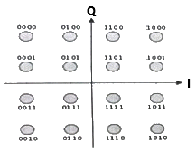
- 8진 DFSK
- 16진 PSK
- 16진 QAM
- 8진 QAM
(정답률: 76%)
44. 다음 중 WDM 특징에 대한 설명으로 틀린 것은?
- 여러 파장대역을 동시에 전송하는 광 다중화 방식이다.
- 다른 파장의 채널을 추가하기 어려워 확장성이 부족하다.
- 서로 다른 전송률과 프로토콜을 갖는 파장 채널들로 공존이 가능하다.
- 광 수동소자만으로 쉽게 분기결합이 가능하다.
(정답률: 67%)
45. 길이 500[m] 광섬유 4개를 융착접속하여 하나의 광섬유로 사용하고자 한다. 연결한 고아섬유의 총 손실은 몇 [dB]인가? (단, 광섬유의 손실 : 2[dB/km], 융착접촉 손실 : 0.1[dB])
- 2.3[dB]
- 2.4[dB]
- 4.3[dB]
- 4.4[dB]
(정답률: 66%)
46. 광케이블을 CO(Central Office)에서 가입자 댁내에서 연결하여 안정된 인터넷 서비스를 제공하는 방식은?
- FTTF
- FTTH
- FTTO
- FTTC
(정답률: 72%)
47. 다음 중 광통신에서 사용되는 발광소자는?
- VD(Varactor Diode)
- PIN 다이오드(PIN Diode)
- APD(Avalanche Photo Diode)
- LD(Laser Diode)
(정답률: 75%)
48. 다음 중 이동통신망에서 인접 셀간에 간섭 신호를 감소시키는 방법으로 옳지 않은 것은?
- 기지국의 수신 안테나를 Diversity 방식으로 구성된다.
- 지형에 맞는 안테나를 사용한다.
- 기지국의 출력과 안테나의 높이를 감소시킨다.
- 기지국 안테나의 기울기를 조정하여 안테나 수신 전계 패턴이 지면으로 향하는 Umbrella Pattern이 되도록 한다.
(정답률: 81%)
49. 다음 중 비동기식 전송 방식의 설명으로 적합하지 않은 것은?
- 프레임 단위로 데이터를 일시에 전송한다.
- 송신측과 수신측이 각각 독립된 클럭을 사용한다.
- 각 문자의 앞에 1개의 Start Bit, 문자 뒤에 1~2개의 Stop Bit가 존재한다.
- 문자와 문자 사이에 일정치 않은 휴지 시간이 존재할 수 있다.
(정답률: 57%)
50. 디지털 정보통신시스템이 9,600[bps]로 동작하여야 할 경우 신호요소가 4[bit]로 인코드 된다면 이상적인 전송채널에서 최소 얼마의 대역폭을 지녀야 하는가?
- 1,200[Hz]
- 2,400[Hz]
- 4,800[Hz]
- 9,600[Hz]
(정답률: 87%)
51. 데이터를 변조하지 않은 상태, 즉 직류펄스의 형태 그대로 전송하는 방식으로 RZ, MRZ, AMI(Bipolar), Manchster, CMI 등의 방식이 사용되는 전송방식은?
- 동기식 전송방식
- 비동기식 전송방식
- 기저대역 전송방식
- 반송대역 전송방식
(정답률: 73%)
52. Baseband 전송방식의 설명으로 다음 중 틀린 것은?
- 단거리 전송에 사용된다.
- 주파수 상에 신호의 스펙트럼이 이동하지 않은 채로 전송된다.
- 전송매체는 주로 동선 또는 광섬유 등을 통해서 전송된다.
- FM 통신방식이 대표적인 예이다.
(정답률: 58%)
53. 프로토콜의 3요소로 옳은 것은?
- 구문(Syntax) - 의미(Semantics) - 타이밍(Timing)
- 주소(Address) - 개체(Entity) - 타이밍(Timing)
- 네트워크(Network) - 프레임(Frame) - 의미(Semantics)
- 구문(Syntax) - 네트워크(Network) - 개체(Entity)
(정답률: 82%)
54. OSI 7계층에서 암·복호화, 데이터 압축 등을 수행하는 계층은?
- 전송계층
- 세션계층
- 표현계층
- 응용계층
(정답률: 75%)
55. OSI 참조모델에 대한 설명으로 틀린 것은?
- 4개의 계층 구조를 갖는다.
- 시스템간 상호접속을 위한 개념을 규정한다.
- 특정 시스템에 대한 프로토콜의 의존도를 줄여준다.
- 개방형 시스템들간의 접속을 위해 ISO에서 만들었다.
(정답률: 82%)
56. 다음 IP address 중 지정된 네트워크의 모든 호스트에 브로드캐스팅이 불가능한 IP address는 무엇인가?
- 77.255.255.255
- 154.3.255.255
- 211.82.157.255
- 80.222.230.255
(정답률: 72%)
57. C calss의 네트워크 200.13.95.0의 서브넷 마스크가 255.255.255.224 일 경우 사용 가능한 최대 가능한 호스트 수는?
- 6
- 14
- 30
- 62
(정답률: 68%)
58. VLAN에서 트래픽을 전달하도록 설계된 표준 프로토콜로 옳은 것은?
- ISL
- VNET
- 802.1Q
- 802.11A
(정답률: 68%)
59. 오류 검출 방법 중 Block 단위의 1의 수가 짝수 또는 홀수가 되도록 각 행에 Check Bit를 부가하는 방식으로 옳은 것은?
- 수직 Parity Check 방식
- 수평 Check 방식
- 정 마트 정 스페이스 방식
- 군계수 Check 방식
(정답률: 68%)
60. 다음 중 오류 검출 부호로 틀린 것은?
- CRC code
- BCH code
- BASE code
- hamming code
(정답률: 72%)
4과목: 전자계산기일반 및 정보설비기준
61. 컴퓨터 저장장치의 계층적 구조에 따라 용량이 작은 것부터 큰 것을 올바르게 나열된 것은? (단, 왼쪽이 가장 작다.)
- 레지스터 → RAM → 캐쉬 → HDD
- 레지스터 → 캐쉬 → HDD → RAM
- 레지스터 → RAM → HDD → 플래시
- 레지스터 → 캐쉬 → RAM → HDD
(정답률: 74%)
62. 4진수 23.1034을 2진수로 변환한 것은?
- 1010.1100012
- 1011.0100112
- 1100.1110012
- 1101.1100112
(정답률: 62%)
63. 다음 중 10진수 13과 같지 않은 것은?
- 2진수 1101
- 5진수 23
- 8진수 15
- 16진수 C
(정답률: 72%)
64. 다음 중 “1”과 “0” 중에 “0”에 대응되는 비트만 클리어 되는 동작은?
- OR 명령
- AND 명령
- 배타적 OR 명령
- 시프트 명령
(정답률: 58%)
65. 컴퓨터 사용자가 컴퓨터의 본체 및 각 주변 장치를 가장 능률적이고 경제적으로 사용할 수 있도록 하는 프로그램은?
- Operating System
- Macro
- Compiler
- Loader
(정답률: 76%)
66. 다음 설명에 해당하는 것은 무엇인가?
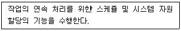
- Job Control Program
- Service Program
- Data Management Program
- Problem Processing Program
(정답률: 69%)
67. 다음은 SJF 스케줄링에 대한 설명이다. 틀린 것은?
- 선점형 스케줄링 기법이다.
- SJF 스케줄링을 변형시킨 방법이 SRT 스케줄링 기법이다.
- 처리해야 할 작업의 시간이 가장 적은 프로세서가 가장 먼저 CPU를 할당 받는다.
- 작업들이 시스템을 통과할 때 최소 평균 대기 시간을 제공한다.
(정답률: 60%)
68. 다음 중 소프트웨어에 대한 설명으로 틀린 것은?
- RC(Release Candidate)는 Microsoft에서 사용하는 소프트웨어 개발 단계로 정식판이 배포되기 직전의 단계로 볼 수 있다.
- 셰어웨어(Shareware)는 컴퓨터 소프트웨어의 마케팅 방식의 하나로 데모웨어 또는 평가 소프트웨어라고도 부른다.
- 소프트웨어의 구분 중 베타버전(Beta)은 제작회사 내에서 성능 시험을 위한 테스터나 개발자를 위한 버전이다.
- 번들(Bundle) 프로그램은 컴퓨터 시스템이나 프로그램을 구입할 경우, 특정 제품과 함께 서비스로 제공되는 부가 프로그램을 의미한다.
(정답률: 62%)
69. 다음 중 마이크로프로세서의 연산단위가 아닌 것은?
- 8bit
- 16bit
- 24bit
- 32bit
(정답률: 71%)
70. 데이터 체인(Daisy Chain)이란 연속적으로 연결되어 있는 하드웨어 장치들의 구성을 지칭한다. 다음 중 Daisy Chain 제어 방식에 대한 설명으로 옳은 것은?
- 고속 I/O 장치와 메모리간 CPU와 직접 데이터 교환
- 속도가 느린 I/O장치와 프로그램에 의한 데이터 교환
- CPU가 여러 개의 I/O와의 전송 방식
- 인터럽트를 발생하는 장치들을 직렬로 연결하는 우선순위 제어 방식
(정답률: 65%)
71. 정보통신서비스 제공자 및 이용자의 책무에 관한 설명이다. 괄호에 들어 갈 내용으로 맞는 것은?
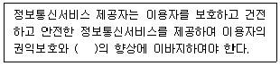
- 정보이용능력
- 정보제공능력
- 정보보호능력
- 정보가공능력
(정답률: 63%)
72. 다음 중 과학기술정보통신부장관이 전기통신사업법에서 정하는 보펴적 역무의 구체적인 내용을 정할 때 고려해야 하는 사항으로 보기 어려운 것은?
- 정보화 촉진
- 이용자의 이익과 안전
- 전기통신역무의 보급 정도
- 정보통신기술의 발전 정도
(정답률: 68%)
73. 다음 중 방송통신설비가 다른 사람의 방송통신설비와 접속되는 경우에 그 건설과 보전에 관한 책임 등의 한계를 명확하게 하기 위하여 설정하여야 하는 것은?
- 접속점
- 분계점
- 단자반
- 경계점
(정답률: 78%)
74. 방송통신설비 중 절연저항에 대한 설명이다. 괄호안에 들어갈 내용으로 맞는 것은?
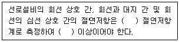
- 직류 500볼트, 5메가옴
- 직류 500볼트, 10메가옴
- 교류 500볼트, 5메가옴
- 교류 500볼트, 10메가옴
(정답률: 72%)
75. 방송통신설비 중 국선 인입에 대한 설명이다. 괄호안에 들어갈 내용으로 맞는 것은?
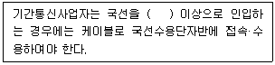
- 3회선
- 5회선
- 10회선
- 15회선
(정답률: 72%)
76. 전기통신설비를 이용하거나 전기통신설비와 컴퓨터 및 컴퓨터의 이용기술을 활용하여 정보를 수집·가공·저장·검색·송신 또는 수신하는 정보통신체제를 무엇이라 하는가?
- 정보전송설비
- 인터넷설비
- 정보통신망
- 컴퓨터통신망
(정답률: 74%)
77. 다음 중 정보통신공사업법에서 정의하는 용어에 관한 설명으로 잘못된 것은?
- 용역업 : 정보통신공사에 관한 용역을 영업으로 하는 것
- 수급인 : 발주자로부터 공사를 도급 받은 공사업자
- 감리원 : 공사의 감리에 관한 기술 또는 기능을 가진 사람으로서 과학기술정보통신부장관의 인정을 받은 사람
- 발주자 : 도급 받은 공사 또는 용역을 하도급 하는 사람
(정답률: 77%)
78. 전기통신을 하기 위한 기계·기구·선로 또는 기타 필요한 설비를 무엇이라 하는가?
- 정보통신설비
- 방송통신설비
- 전기통신설비
- 자가통신설비
(정답률: 78%)
79. 전기통신사업법에서 사용하는 용어에 대해 설명한 것이다. 괄호에 들어 갈 내용으로 맞게 나열된 것은?
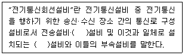
- 선로, 교환
- 전원, 교환
- 선로, 접지
- 전원, 접지
(정답률: 71%)
80. 기간통신사업자가 선로 등에 관한 측량, 전기통신설비의 설치 또는 보전 공사를 위해 필요한 경우 사유 또는 국·공유의 전기통신설비 및 토지 등을 일시 사용할 수 있게 되는데, 이때 허용되는 최대 사용기간은?
- 1개월
- 3개월
- 6개월
- 10개월
(정답률: 69%)